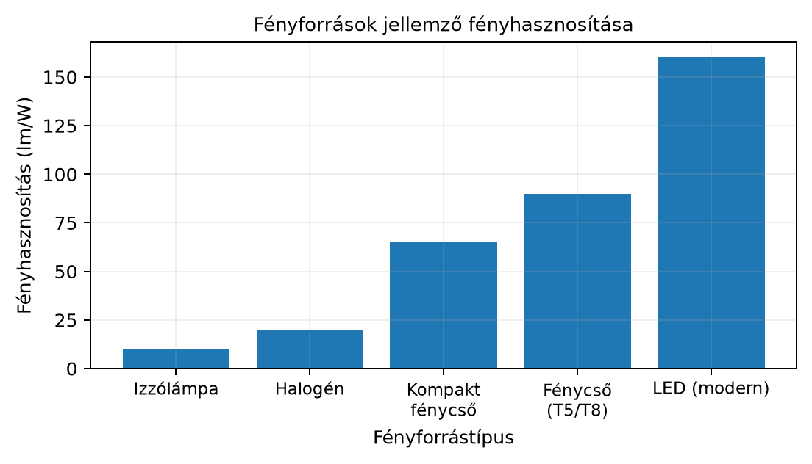
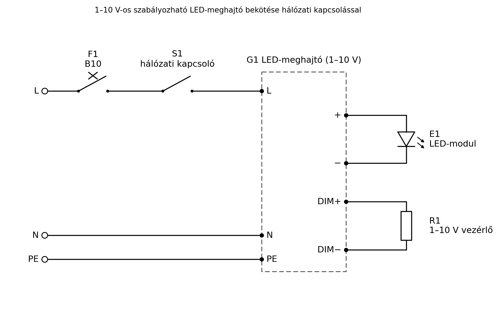
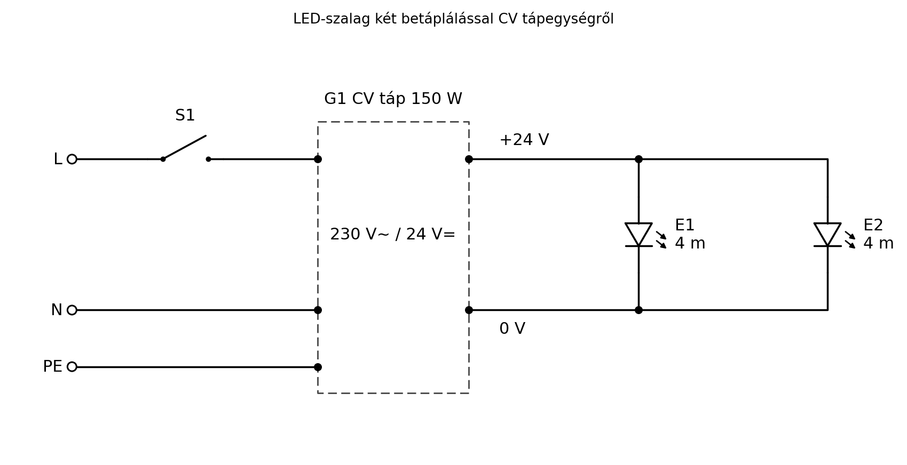

A villanyszerelő a gyakorlatban nem csak vezetékeket és kapcsolókat szerel, hanem gyakran világítási áramköröket is épít, lámpatesteket köt be, vagy éppen meglévő fényforrást cserél. Ha csak a „watt” alapján gondolkodunk, nem tudjuk megmondani, hogy egy régi izzó helyére milyen LED-et ajánljunk, vagy hogy hány lámpatest kell egy adott helyiség megfelelő megvilágításához. A fénytechnikai alapmennyiségek – fényáram, fényerősség, megvilágítás, fényhasznosítás – ismerete nélkül nem tudunk szakszerűen dönteni, és könnyen túl sötét vagy éppen kellemetlenül fényes környezetet hozhatunk létre. Ebben az alfejezetben ezeket a fogalmakat építjük fel, összehasonlítjuk a fényforrástípusokat, és megtanuljuk a fényforrás-kiválasztás alapjait.
Képzeljünk el egy konyhát, ahol a pult felett egyetlen lámpatest világít. A lámpatest fényt bocsát ki, de ez a fény nem egyenletesen jut mindenhová: a pult felületére például annál több fény érkezik, minél közelebb van a lámpához, és minél merőlegesebben esik rá. A gyártó által megadott lumen érték megmondja, hogy a fényforrás összesen mennyi látható fényt ad le, de az, hogy a munkafelület valójában mennyire lesz világos, a lámpatest kialakításától, a helyiség méretétől, a falak színétől és a távolságtól is függ. Ezt a gondolatot formalizáljuk a következő mennyiségekkel.
Definíció. A fényáram () az a látható fényteljesítmény, amelyet a fényforrás kisugároz; mértékegysége a lumen (). A gyártói adatlapon általában ezt adják meg, mert ez jellemzi a fényforrás „mennyiségét”.
Definíció. A fényerősség () egy adott irányban kisugárzott fényáram sűrűsége: ha egy pontszerű forrásból kis térszögbe () adott irányban fényáram jut, akkor
Mértékegysége a kandela (, ahol a szteradián, a térszög egysége). Egyenletesen, minden irányban sugárzó pontszerű forrás teljes fényárama
mert a teljes térszög . A fényerősség a lámpatest optikai kialakításánál (pl. szűk sugárzású spotlámpa) fontos.
Fényeloszlási görbe. Egy valódi lámpatest fényerőssége irányfüggő: lefelé erős, oldalra gyengébb, felfelé gyakran nulla. A gyártó ezt az adatlapon polárdiagramon (fényeloszlási görbén) adja meg, és hogy a görbe ne függjön a beépített fényforrás teljesítményétől, 1000 lm-re normálva, cd/klm (kandela per kilolumen) egységben. A tényleges fényerősség: , ahol a lámpatest fényárama kilolumenben. A diagram szöge, a , a függőlegesen lefelé mutató iránytól mért szög ( = közvetlenül a lámpa alatt). Széles (opál panel), közepes (mélysugárzó, kb. -os nyaláb) és szűk (spot, kb. -os nyaláb) eloszlást különböztetünk meg; minél szűkebb a nyaláb, annál nagyobb a fényerősség a tengely irányában, mert ugyanaz a fényáram kisebb térszögbe jut. Az opál panel jó közelítéssel Lambert-sugárzó: , ahol 1000 lm-re .
Olvassuk le a panel görbéjét egy 4000 lm-es lámpatestre. A irányban ; a irányban . Az interaktív változatban válaszd ki a lámpatestet, állítsd a szöget és a fényáramot, és a lap kiírja a cd/klm és a cd értéket. Hasonlítsd össze: a mélysugárzó és a spot a tengely irányában sokkal erősebb, de már 30–40°-nál alig ad fényt – ezért kell spotból sok a mennyezetre, és ezért sötét a sarok egy szűk nyalábú lámpa mellett. A görbék szemléltetők ( alakú modellek); a valódi értéket a gyártói adatlap vagy az LDT-fájl adja. A görbét a Világítás tervezése: beltér és kültér alfejezet pont-módszere használja.
Definíció. A megvilágítás () az egységnyi felületre érkező fényáram:
ahol a felület nagysága. Mértékegysége a lux (). Ez a gyakorlatban leginkább használt mennyiség, mert a munkafelület, az íróasztal, a pult vagy a közlekedőútvonal világosságát ezzel írjuk le. Fontos, hogy a képlet akkor pontos, ha a fényáram merőlegesen és egyenletesen oszlik el a felületen. Ha a fény ferde szögben érkezik, akkor
ahol a fénysugár és a felület normálisa (merőlegese) közötti szög.
Definíció. A fénysűrűség () egy felület egységnyi látszólagos vetületére, adott irányban kisugárzott fényerősség; mértékegysége . A fénysűrűség a gyakorlatban azért fontos, mert a szem a fényforrás vagy a megvilágított felület fénysűrűségét érzékeli; ez határozza meg a káprázást és a vizuális komfortot. A nagyon nagy fénysűrűségű felület (pl. csupasz LED diódák) kellemetlen, ezért a jó lámpatestek fényét opál burával, prizmás diffúzorral szórják.
Definíció. A fényhasznosítás () a fényforrásból kijövő fényáram és a felvett villamos teljesítmény hányadosa:
Mértékegysége . Ez a fényforrás energetikai hatékonyságának legfontosabb mérőszáma. Minél nagyobb, annál több fényt kapunk ugyanannyi villamos energiából.
Definíció. A színhőmérséklet () a fényforrás színérzetét jellemző egyenértékű feketesugárzó hőmérséklete kelvinben. A gyakorlatban három fő csoportot különböztetünk meg:
A megfelelő színhőmérséklet nem csupán esztétikai kérdés: a rosszul megválasztott színérzet ronthatja a koncentrációt és a térérzetet.
Definíció. A színvisszaadási index () azt mutatja meg, hogy a fényforrás fényénél mennyire hűen látjuk a tárgyak színét a természetes fényhez képest. Skálája 0–100; a 100 a hű színvisszaadást jelenti. Lakóhelyiségekben általában ajánlott, míg olyan helyeken, ahol a színek pontos ítélete fontos (festékbolt, fogorvosi rendelő, textilüzlet), szükséges. A LED-ek és fénycsövek többsége ma 80–95 közötti értékkel kapható, a hagyományos izzólámpa = 100.
A villanyszerelőnek ismernie kell a leggyakoribb fényforrástípusokat, mert a csere és a kiválasztás során ezek jellemzőit kell mérlegelnie.
Izzólámpa. A hagyományos izzószálas lámpa a hőmérsékleti sugárzás elvén működik: a villamos áram felizzítja a wolframszálat. Fényhasznosítása alacsony, jellemzően 8–15 lm/W, élettartama rövid, kb. 1000 óra. A színvisszaadása tökéletes (), a színhőmérséklete kb. 2700 K, és természetes módon dimmelhető. Energiahatékonysági okokból az EU piacán a hagyományos izzólámpákat fokozatosan kivezették; ma már legfeljebb speciális célokra (pl. sütővilágítás) kaphatók.
Halogénlámpa. A halogén lámpa szintén izzószálas, de a bura halogéngázt tartalmaz, ami a wolframgőz visszavezetésével magasabb izzószál-hőmérsékletet és jobb hatásfokot tesz lehetővé. Fényhasznosítása 15–25 lm/W, élettartama 2000–4000 óra, színvisszaadása kiváló, színhőmérséklete kb. 2800–3200 K. A halogén pontosan dimmelhető, ezért ahol kiemelt a fényerő-szabályozás (például lakossági hangulatvilágítás, színpadi világítás), még mindig használják, bár energiahatékonysága rosszabb, mint a LED-é.
Fénycső. A fénycső kisülőlámpa: a fényt a higanygőzben létrejövő gázkisülés ibolyántúli sugárzása gerjeszti, amelyet a cső belső fala bevonó por alakít át látható fénnyé. A hagyományos T8/T5 fénycsövek fényhasznosítása 60–100 lm/W, élettartama 15 000–30 000 óra, színvisszaadása 80–90 lehet, színhőmérsékletük a fényportól függően meleg- vagy hidegfehér. Működésükhöz előtét szükséges: régebben elektromágneses előtét és gyújtó, ma már gyakran elektronikus előtét. A fénycsövek higanyt tartalmaznak, ezért veszélyes hulladéknak minősülnek; a törött fénycsövet megfelelően kell gyűjteni. Új berendezésbe ma már LED-megoldást választunk.
Kompakt fénycső (CFL). A kompakt fénycső a hagyományos fénycső csöveit feltekercselt, az előtétet beépített formában tartalmazza, ezért a hagyományos foglalatokba csavarható. Fényhasznosítása 50–80 lm/W, élettartama kb. 8000–15 000 óra, de bekapcsoláskor lassan éri el a teljes fényt, és sok fajtája nem dimmelhető. A higanyt a CFL is tartalmazza, ezért ártalmatlanítása körültekintést igényel. Az EU-ban a beépített előtétes kompakt fénycső (2023 elején) és a T8 fénycső (2023 második felében) forgalomba hozatala a higanytartalmat szabályozó RoHS-mentességek lejártával megszűnt, a T5 fénycsőre és a beépített előtét nélküli, dugaszolós kompakt fénycsőre későbbi határidő vonatkozik (ellenőrizendő: RoHS-mentességek a hatályos felhatalmazáson alapuló irányelvek szerint, EU ökotervezési rendelet); meglévő berendezésben üzemelhetnek, cserénél LED-megoldást választunk. A fénycsöves lámpatest LED-csőre átalakítása a lámpatest módosítása: a gyártói útmutatót és a lámpatest-szabványt (MSZ EN 60598) követni kell (ellenőrizendő).
LED (fénykibocsátó dióda). A LED félvezető fényforrás: a p–n átmenetben az elektron-lyuk rekombináció során fény keletkezik. Fényhasznosítása ma jellemzően 80–200 lm/W, de a fejlődés folyamatos; élettartama 25 000–50 000 óra vagy több, azonnal eléri a teljes fényt, és jól szabályozható. A LED-ek színvisszaadása 80–95 tipikusan, színhőmérsékletük széles tartományban választható (2200–6500 K). A LED-modulok hőre érzékenyek, ezért a lámpatest hűtésére, a LED-illesztő áramkörre (driverre) és a minőségi tápegységre kiemelt figyelmet kell fordítani. A LED-lámpák nem tartalmaznak higanyt, így környezeti szempontból kedvezőbbek, de elektromos és elektronikus hulladékként (WEEE) kezelendők.
Talpak és foglalatok. Cserénél először azt kell felismerni, milyen talpú a fényforrás, mert a foglalat ehhez igazodik. Az alábbi tablón a leggyakoribbak láthatók: az E27 és az E14 csavaros (Edison-) talp, amelyet ütközésig becsavarunk; a GU10 két vastagvégű csapos, hálózati (230 V-os) spotlámpatalp, amelyet benyomunk és elfordítunk (nem tévesztendő össze a kisfeszültségű GU5.3-mal); a T8 fénycső G13 talpa, amelynek két csapját a foglalat résébe illesztjük, majd a csövet 90°-kal elfordítjuk; végül a LED-modul, amely nem foglalatba kerül, hanem kis feszültségű, állandó áramú meghajtóhoz csatlakozik. Az ábra alsó része az E27 foglalat bekötését mutatja: a kapcsolt fázis a középső talpérintkezőre, a nulla a menetes hüvelyre kerül.
Felcserélt bekötésnél a menetes hüvely kerül fázisra, és fényforráscsere közben a félig kicsavart lámpa menete érinthető – ezért a foglalat bekötésénél a jelölést ellenőrizni kell, és a kapcsoló mindig a fázist bontsa. Fényforrást csak lekapcsolt, kihűlt lámpatestben cserélünk. A HTML-kiadásban a talptípusokra mutatva rövid leírás jelenik meg.
A fényforrások összehasonlítását szemlélteti az alábbi diagram, amely a jellemző fényhasznosításokat mutatja:

A diagramon látható, hogy a LED fényhasznosítása kiemelkedően magas, ezért az új telepítéseknél és cseréknél ma már ez az általános ajánlat.
A LED dióda nyitóirányú feszültsége jellemzően 2,5–3,5 V, és a fényárama az átfolyó árammal arányos. A LED-et ezért nem közvetlenül feszültségről, hanem áramgenerátoros meghajtóról kell táplálni, hogy az áram ne nőjön túl a megengedett értéken. A legtöbb LED-lámpában a meghajtó (driver) egy kis kapcsolóüzemű tápegység (SMPS), amely a hálózati váltakozó feszültséget állandó egyenárammá alakítja. A driver kimeneti paraméterei közül a névleges kimenő áram (pl. 350 mA, 700 mA) és a kimeneti feszültségtartomány a meghatározó; a szerelőnek a LED-modul és a driver adatlapját össze kell hangolnia. A passzív alkatrészek (tekercs, kondenzátor) szerepét a Passzív alkatrészek: ellenállás, kondenzátor, tekercs alfejezetben tanultuk; az elektronikus előtétek és LED-driverek bemeneti szűrőiben ezek nagy jelentőséggel bírnak.
Hogy hol ül a meghajtó, azt az alábbi ábra mutatja. Az (a) részen egy E27-es LED-fényforrás félmetszete látható: a 2 LED-ek a 3 fémhordozós nyomtatott áramköri lapon (NYÁK) ülnek, amely a 4 hővezető rétegen át az 5 hűtőtestnek adja át a hőt; a 6 beépített meghajtó a talp fölött, a 7 szigetelő burkolatban van. A (b) részen egy élvilágítású LED-panel rétegei láthatók: a 13 LED-sor a 12 fényvezető lap peremén világít, a fényt a 11 diffúzor teríti szét; a 16 meghajtó itt külső egység, a hálózat a 17 sorkapocsra (L, N, PE) csatlakozik, a 10 fémkeret a 18 PE-bekötéssel kapja a védővezetőt.
A LED élettartamát elsősorban a hőmérséklet határozza meg: zárt, hőtorlódásos lámpatestbe nem minden LED-fényforrás való (a csomagoláson jelölik). Külső meghajtónál a kimenő áramot és a feszültségtartományt a modul adataival kell egyeztetni. A HTML-kiadásban a részekre mutatva a szerepük olvasható.
Fényerő-szabályozás. A LED-ek fényereje az áram módosításával vagy impulzus-szélesség-modulációval (PWM) állítható. A gyakorlati szerelés szempontjából két fő szabályozási módot érdemes ismerni:
A fázishasításos dimmer-betét (két- és háromvezetékes) és a nyomógombos, több helyről vezérelt dimmer bekötési rajzát a Kapcsolók, dugaszoló aljzatok és szerelvények alfejezet (16.1) „Fényerő-szabályozó bekötése és kiválasztása” pontja mutatja. A fázishasítás elvét és a felfutó, illetve lefutó élű vezérlés elektronikáját az Erősáramú félvezetők: tirisztor, triac, IGBT, MOSFET alfejezet tárgyalja. Itt a fényforrás-oldali változatot nézzük: az 1–10 V-os (analóg vezérlésű) LED-meghajtó két külön áramkört kap – a hálózati tápot és a vezérlőjelet.

Kövesd végig a két kört: a hálózati kör (L → F1 → S1 → G1 → N) adja a meghajtó tápját, a vezérlőkör (G1 DIM+ → R1 → DIM−) csak a fényerőt állítja. Mi történik, ha az S1-et kihagyod, és a vezérlőt a legkisebb állásba tekered? (A lámpa halványan tovább világít, mert 1 V-on a meghajtó nem kapcsol ki; ezért kell a hálózati kapcsolás – sok vezérlőbe ez a kapcsoló be is van építve.) DALI-előkészítésű meghajtónál a DIM+/DIM− helyén a DA/DA kapcsok vannak, és a be-/kikapcsolást a digitális parancs végzi; a vezetékezés szabályait a fenti bekezdés és a hivatkozott épületautomatikai alfejezet adja.
Villogás (flicker). A gyenge minőségű LED-meghajtók kimenő árama nem tökéletesen egyenletes, hanem a hálózati frekvencia kétszeresével (100 Hz) vagy a kapcsolási frekvenciával enyhén ingadozik. Ez a szem számára gyakran láthatatlan, de hosszú távon fejfájást, vizuális fáradtságot okozhat, és videófelvételen csíkozódást eredményezhet. A jó minőségű driverek ezt minimalizálják. A villogást szerelőként úgy ellenőrizhetjük legegyszerűbben, hogy az okostelefon kameráját (lassított felvételi módban) a világító lámpára vagy a megvilágított felületre irányítjuk – ha a képen látható csíkozódás vagy vibrálás jelentkezik, a meghajtó valószínűleg rossz minőségű.
Pult- és lépcsővilágításnál gyakran LED-szalagot szerelsz. Itt két meghajtótípust kell megkülönböztetni:
A kettő felcserélése a modul tönkremenetelét vagy működésképtelenséget okoz.
Méretezési szabályok. Az összteljesítmény . A tápot legfeljebb kb. 80 %-ig terheld, azaz névleges teljesítménye legalább (ellenőrizendő: gyártói ajánlás). Egy betáplálásról a szalag csak a gyártó által megadott hosszig (jellemzően kb. 5 m) mehet; ennél hosszabbnál több, párhuzamos tápkábeles betáplálás kell, nem sorba fűzött szakaszok (ellenőrizendő: a szalag adatlapja). A 24 V-os szalag árama fele a 12 V-osénak, ezért a feszültségesés is kisebb hatású. A tápot szellőző, hozzáférhető helyre tedd (nem vakolat alá), és SELV-kimenetű legyen (Védőkisfeszültség, II. osztály, védőelválasztás és egyéb módok).
Kapcsolás. A táp hálózati oldalát kapcsoljuk; a kapcsolót a táp bekapcsolási lökése terheli (Kismegszakítók és kioldási jelleggörbék (B, C, D)). Fényerőt a táp kimenetén PWM-dimmerrel vagy szabályozható tápról (fázishasításos, 1–10 V, DALI) lehet állítani.

A fényforrás kiválasztásakor nem elég a bekerülési árat nézni, a teljes életciklus költséget kell figyelembe venni: a villamosenergia-fogyasztást és a csere gyakoriságát. A LED magasabb beszerzési ára a jóval kisebb fogyasztás és a hosszú élettartam miatt általában hamar megtérül.
Az energiahatékonyságot az EU energiaosztályokkal jelöli; a jelenlegi rendszerben (2021-től) az osztályok A-tól G-ig terjednek, és az átskálázott címkén az A osztály a jelenleg ritka, igen nagy hatékonyságú termékeké; a szokásos LED-fényforrások jellemzően C–F, a halogénlámpák G osztályúak, a hagyományos izzó forgalomból kivezetett (ellenőrizendő: EU 2019/2015 rendelet osztályhatárai, kb. A ≥ 210 lm/W, F ≥ 85 lm/W). A villanyszerelőnek a megrendelővel érdemes közölnie: a lámpatestek cseréjekor ne a wattra, hanem a lumenre és az energiaosztályra figyeljen.
Az élettartamot a LED-eknél gyakran olyan jelölésekkel adják meg, mint L70B50 vagy L80B10. Az LxBy jelölés azt adja meg, hogy a megadott üzemidő végén a lámpák legfeljebb y %-ának csökken a fényárama a kezdeti x %-a alá. Például az L70B50 = 50 000 h azt jelenti, hogy 50 000 üzemóra után a lámpák legalább felének fényárama még legalább a kezdeti 70%; az L80B10: a lámpák legfeljebb 10%-a esik 80% alá (ellenőrizendő: MSZ EN 62717). A pontos értékeket mindig a gyártó adatlapján kell ellenőrizni.
Szabvány. A beltéri munkahelyek világítására vonatkozó minimum megvilágítási értékeket az MSZ EN 12464-1 tartalmazza (pl. irodai munkaterületen tipikusan 500 lx, közlekedőútvonalon 100 lx – a konkrét értékeket a szabvány aktuális kiadása szerint kell ellenőrizni). A lámpatestek biztonsági követelményeit az MSZ EN 60598 sorozat határozza meg. A fényforrások energiahatékonysági jelölését és környezetbarát tervezését európai uniós rendeletek szabályozzák; a konkrét energiaosztály-határokat és címkézési követelményeket a gyártói adatlapok és a hatályos EU-rendeletek alapján kell alkalmazni. A villanyszerelőnek nem kell megjegyeznie minden táblázatot, de tudnia kell, hogy a megvilágítási előírások és a lámpatest-szabványok betartása a tervező és a kivitelező közös felelőssége.
| Hagyományos izzó | Szükséges LED-fényáram (kb.) |
|---|---|
| 25 W | 250 lm |
| 40 W | 470 lm |
| 60 W | 806 lm |
| 75 W | 1055 lm |
| 100 W | 1521 lm |
A 35 W-os GU10 halogén spot kb. 230–300 lm-es LED-del váltható ki; irányított fényforrásnál a nyalábszög is számít (ellenőrizendő: gyártói adat).
Döntési sorrend a csere előtt:
Mini-eset. Nappali, ötágú csillár 5 × 40 W-os E14 izzóval, régi dimmerrel. Megoldás: 5 darab, egyenként legalább 470 lm-es, 2700 K-es, -as, dimmelhető E14 LED, a dimmer cseréje pedig LED-kompatibilis típusra (ha a dobozban van nulla, háromvezetékes betétre) – a bekötést a Kapcsolók, dugaszoló aljzatok és szerelvények alfejezet mutatja.
Egy társasházi lakás konyhájában a megrendelő régi fénycsöves lámpatestet szeretett volna cseréltetni. A szerelő felmérte a konyhát: a pult hossza 3 m, a konyha teljes alapterülete 12 m², a meglévő lámpatest két 36 W-os T8 fénycsövet tartalmazott, ami a fénypor típusától függően csövenként kb. 2500–3350 lm, együtt kb. 5000–6700 lm fényáramot adott (ellenőrizendő: a régi csövek adatlapja). A megrendelő „60 wattos” LED-et kért, mert a boltban így hallotta. A szerelő elmagyarázta, hogy a watt nem a fény mennyiségét jelenti: a régi fénycsöves rendszer – az elektromágneses előtéttel együtt kb. 85–90 W rendszerteljesítmény (ellenőrizendő) – helyett elegendő lehet például egy kb. 40–45 W-os LED-panel, ha fényárama legalább akkora, mint a régi lámpatesté (itt legalább kb. 5000 lm). A kivitelezés során a szerelő feszültségmentesített, ellenőrizte a kapocs L, N, PE jelölését, és a LED-panel meghajtóját a lámpatesten belül kötötte be. Az ügyfél elégedett volt, mert kevesebb fogyasztással kapta a korábbival legalább azonos fényáramot. A döntő érvek tehát a lumen, a színhőmérséklet és az energiafogyasztás voltak.
A lámpatestcsere szerelési lépéseit az alábbi képsor mutatja. Biztonsági korlát. A feladat tanműhelyi (törpefeszültségű) környezetre vagy jogosult oktató felügyeletére vonatkozik; hálózati feszültségen önállóan ne végezd. Az 1. kép a lekapcsolást és a visszakapcsolás elleni biztosítást, a 2. a feszültségmentesség ellenőrzését mutatja a mennyezeti vezetékvégeken (L–N, L–PE, N–PE). A 3. képen a régi lámpatest leszerelése után az ereket azonosítjuk és megjelöljük (kapcsolt fázis, nulla, védővezető), a 4. képen a rögzítőlapot a födém anyagához és a lámpatest tömegéhez választott tiplivel rögzítjük. Az 5. kép a bekötést mutatja: a PE-ér a leghosszabb, így kiszakításkor utolsóként válik le, a kábelt húzásmentesítő fogja. A 6. képen a felhelyezett lámpatest látható; a visszakapcsolást jogosult személy végzi, majd működéspróba és a PE-folytonosság mérése következik.
Tipikus hiba, hogy az I. osztályú lámpatest PE-kapcsát bekötetlenül hagyják, mert „a régi lámpának sem volt”; ilyenkor a mennyezeti PE-eret a kapocsra kell kötni, és ha nincs, a hiányt dokumentálni és jelezni kell. A HTML-kiadásban a képek egyenként léptethetők.
Watt-egyenérték félreértése. Sokan azt mondják: „100 wattos LED”, mintha a watt a fényerő egysége lenne. Helyes azt kérdezni: hány lumen? A LED-eknél a watt csak a fogyasztást jelenti, a fényáramot a lumen adja meg.
Rossz színhőmérséklet választása. Hidegfehér (5000 K) fényforrást tesznek hálószobába, ahol a melegfehér lenne kellemes, vagy melegfehéret műhelybe, ahol a hidegfehér javítaná a figyelmet. A megrendelő igényét és a helyiség funkcióját mindig egyeztetni kell.
Dimmer kompatibilitás figyelmen kívül hagyása. Nem minden LED-lámpa dimmelhető a meglévő fázishasításos dimmerrel. A helytelen párosítás villogást, zümmögést, sőt a lámpa vagy a dimmer tönkremenetelét okozhatja. Mindig a gyártó által minősített dimmer–LED kombinációt kell alkalmazni.
Megvilágítás mérése rossz helyen. A luxmérőt közvetlenül a lámpa alá teszik, nem a tényleges munkafelületre. A mért adat így nem jellemzi a felhasználói környezetet. A mérést a szabványban meghatározott magasságon és helyen kell végezni.
Gyakorlás: ennek az alfejezetnek a kidolgozott példái, gyakorlatai és megoldással ellátott feladatai az Összefoglaló feladatgyűjtemény villanyszerelő tanulóknak című kötet 19.1 szakaszában találhatók.
A fénytechnikai alapmennyiségek közül a legfontosabb a fényáram (, lumen), amely a fényforrás által kibocsátott látható fény teljes mennyisége, és a megvilágítás (, lux), amely az egységnyi felületre érkező fényáram (, ferde beesésnél -val). A fényerősség (, kandela) az irányított fényáram-sűrűség, a fénysűrűség (, cd/m²) a felületről kisugárzott fényerősség-sűrűség, a fényhasznosítás (, lm/W) pedig az energiahatékonyság mutatója. A színhőmérséklet (K) a fény színérzetét, a színvisszaadási index () a színek hűségét jellemzi. A fényforrások közül a hagyományos izzó és halogén rossz hatásfokú, a fénycső jó, de higanyt tartalmaz, a LED kiemelkedően hatékony, hosszú élettartamú, és áramgenerátoros meghajtót igényel. A fényerő-szabályozásnál a dimmer–LED kompatibilitás kritikus. Továbbvitt eredmény. A fényforrás-kiválasztás során ezeket a mennyiségeket és az életciklus-költséget használjuk a Világítás tervezése: beltér és kültér alfejezetben. A villanyszerelőnek mindig a lumen, a színhőmérséklet, az és a teljes költség alapján kell választania, nem a watt alapján.
A fénytechnikai mennyiségek definíciói és a fotometriai összefüggések stabil, klasszikus ismeretek. A konkrét szabványi követelményeket (MSZ EN 12464-1, MSZ EN 60598) és az energiahatékonysági osztályhatárokat, valamint a fényforrások kivezetését szabályozó EU-rendeleteket a kiadás előtt ellenőrizni kell. A fényforrástípusok jellemző fényhasznosítása és élettartama gyártói katalógusadatokon alapul; a pontos értékek típusfüggőek, ezért azokat mindig a gyártói adatlap szerint kell alkalmazni.